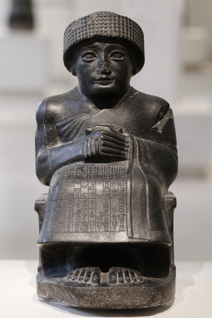
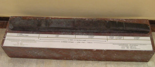
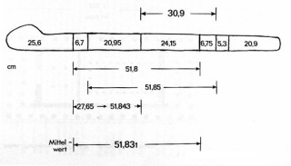

… какою мерою мерите, такою и вам будут мерить.
Матф. 7:2
Ты при посторонних людях чепуху-то эту несешь... А ты умненько себя, голубчик, держи! Ты линию-то свою веди, да так, чтобы комар носу не мог подточить!
Салтыков-Щедрин. Господа Молчалины
 |
Скульптура Гудеа, правителя Лагаша, Лувр |
По-латыни локоть называется cubitus или cubitum, по-гречески – пехий (πῆχυς – pēchys) на древнееврейском - 'ammah, ассирийском – ammatu. По-английски локоть будет cubit, на итальянском – cubito, испанском - codo
На французском языке, более всего нас интересующем в приложении к галеростроению, локоть назывался coudée – [куде]. Появилось это название у французов в середине XII века.
Локоть был не только самой распространенной, но пожалуй и самой точной единицей измерения. Мы говорили уже об эталонах самого древнего, египетского царского локтя (mahe). Он равнялся 52,3-52,5 см и разделен был на семь пальм (ладоней) по четыре пальца в каждой. Известен он по крайней мере с 2700 г. до н.э., со времени строительства пирамиды Джосера.
В 1916 г. немецкий ассиролог Э. Унгер нашел при раскопках священного города шумеров Ниппура эталон неправильной формы с нерегулярной градуировкой. Этот образец, как было установлено, также являлся эталоном локтя, который был назван Шумерским локтем. Длина его 51,85 см, относится он к 2650 г. до н.э.


Локти мусульманских стран мы пока рассматривать не будем, выделим их в отдельный пост, так как нам в дальнейшем предстоит разговор о галерах мусульман и это потребует обстоятельного знакомства с существовавшей у них системой единиц.
Итак, нас интересуют единицы длины, которые использовались при строительстве галер.
Если говорить в целом о кораблестроении, то впервые об использовании там меры «локоть» мы узнаем, пожалуй, из библии:
И сказал [Господь] Бог Ною: …Сделай себе ковчег из дерева гофер; отделения сделай в ковчеге и осмоли его смолою внутри и снаружи. И сделай его так: длина ковчега триста локтей; ширина его пятьдесят локтей, а высота его тридцать локтей. И сделай отверстие в ковчеге, и в локоть сведи его вверху, и дверь в ковчег сделай с боку его; устрой в нем нижнее, второе и третье [жилье]. (Быт.6:13-16)/
На гравюре из Нюрнбергского манускрипта у Ноя ясно видна линейка длиною в локоть